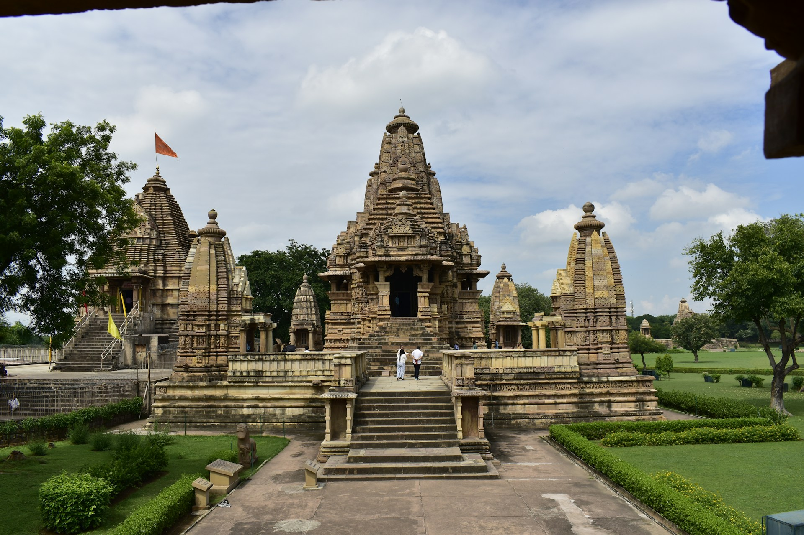
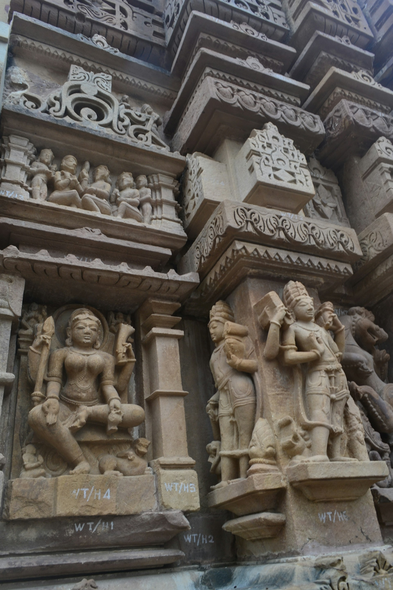
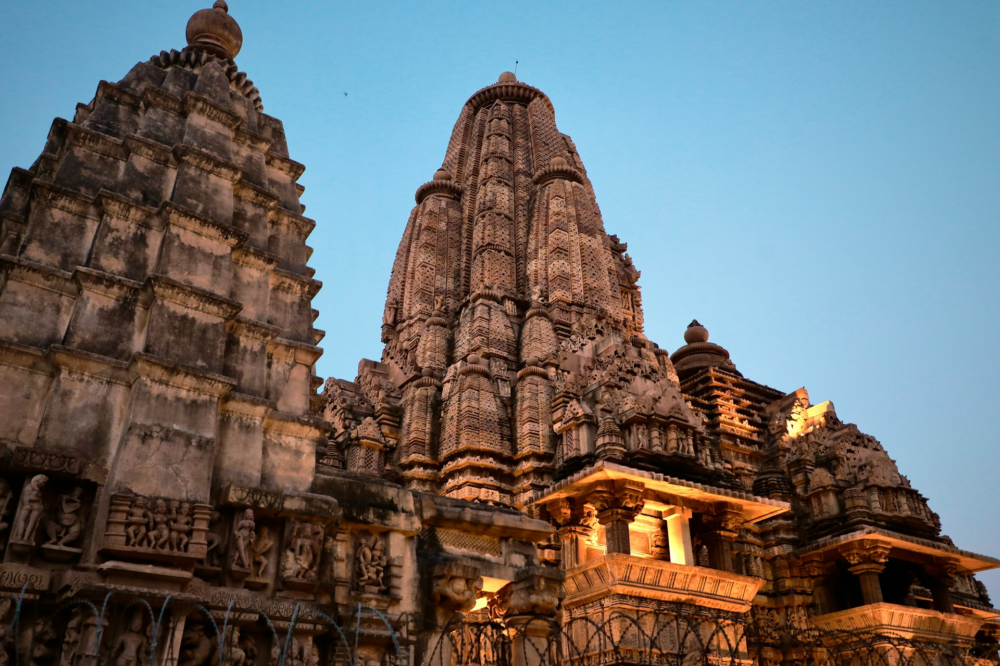
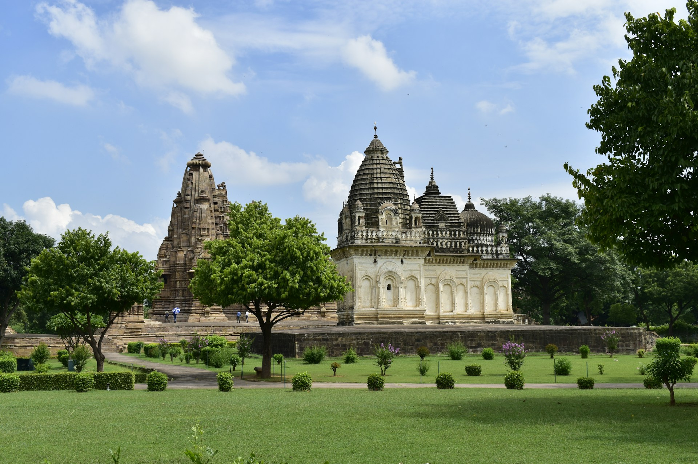

Khajuraho, located in Madhya Pradesh, is famous for its stunning temples that showcase intricate and detailed carvings,
some of which depict various aspects of life, including love, beauty, and spirituality.
The temples were built between 950 and 1050 AD by the Chandela dynasty and reflect the grandeur of Hindu and Jain architecture. The most famous among them is the Kandariya Mahadev Temple, which is renowned for its sculptural beauty and elaborate carvings. These temples are a UNESCO World Heritage Site and attract tourists from around the world.
Khajuraho is also known for its vibrant dance festival, which takes place every year, showcasing classical Indian dance forms.
The temples were built between 950 and 1050 AD by the Chandela dynasty and reflect the grandeur of Hindu and Jain architecture. The most famous among them is the Kandariya Mahadev Temple, which is renowned for its sculptural beauty and elaborate carvings. These temples are a UNESCO World Heritage Site and attract tourists from around the world.
Khajuraho is also known for its vibrant dance festival, which takes place every year, showcasing classical Indian dance forms.





Tips for Visit
- Best season: October to March for pleasant weather.
- Visit early in the morning or late afternoon to avoid the heat and crowds.
- Carry sunscreen, water, and comfortable walking shoes for temple exploration.
- Don't miss the Khajuraho Dance Festival, a beautiful celebration of classical dance.
- Respect the cultural and religious significance of the carvings and temples.

Ramesh Kumar
15 yrs guiding in Agra
⭐⭐⭐⭐⭐

mohmd ali
Mughal history specialist
⭐⭐⭐⭐☆

Imran Ali
Speaks English, Hindi, French
⭐⭐⭐⭐⭐

Priya Sharma
Cultural & heritage tours
⭐⭐⭐⭐
Local Services
| NAME | CONTACT |
|---|---|
| Tourist Helpdesk | +91-7681-220202 |
| Local Taxi | +91-9876543210 |
| Hotel Info | +91-7681-220300 |
| Emergency | 100 / 108 |
Nearby Places
| NAME | Location | Highlights |
|---|---|---|
| Raneh Falls | 20 km | Scenic waterfalls |
| Panna National Park | 40 km | Wildlife sanctuary |
| Chaturbhuj Temple | 5 km | Ancient temple |
| Parsvanath Temple | 2 km | Jain Temple |